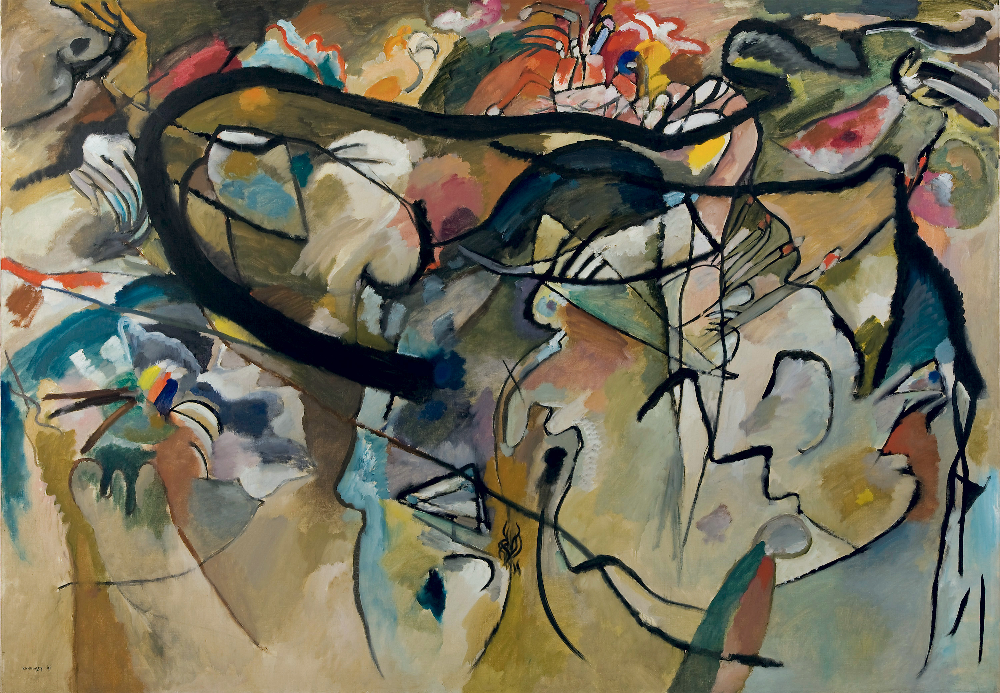
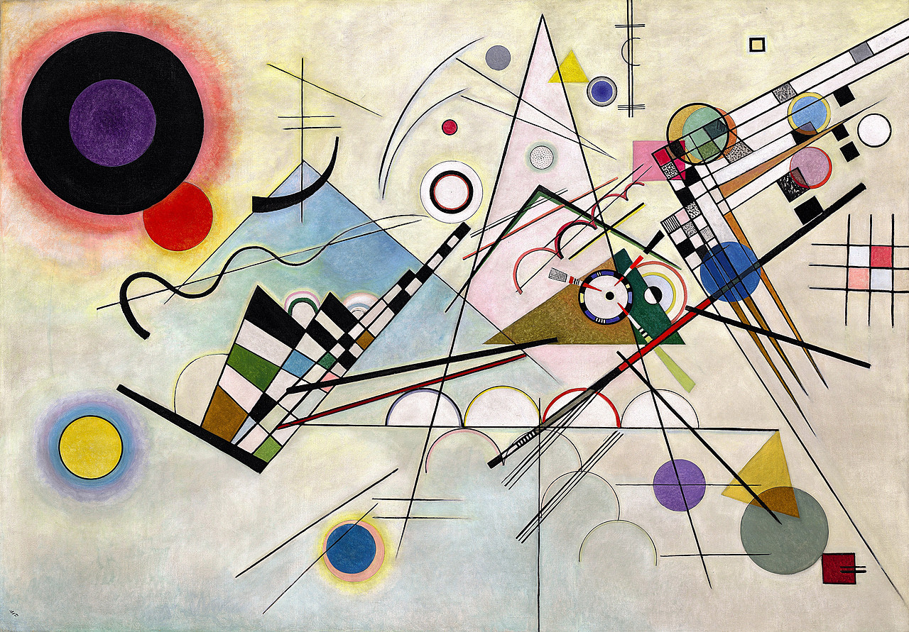

HOME.
Wassily Kandinsky was a pioneering Russian painter and art theorist,
widely regarded as one of the foremost figures in abstract art.
Born on December 16, 1866, in Moscow, Kandinsky's early career was
rooted in law and economics; however, his passion for art ultimately
led him to pursue a more creative path. Influenced by the vibrant colors
and spiritual themes of Russian folklore, as well as the burgeoning
avant-garde movements in Europe, Kandinsky developed a unique style
that emphasized the emotional and spiritual resonance... click to show more
GALLERY.


CART.
Mastercard
Paypal
Apple Pay
ABOUT.
Wassily Kandinsky was a pioneering Russian painter and art theorist.
This website was created in November 2024 to celebrate his legacy and
preserve his artwork for later generations.
For more info...